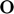
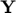
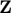

Contents
Function showFrame
Build a graphical representation of the reference frame or reference system specified in input to the function. The function takes as input 4 three-dimensional vectors:
-  : origin of the reference system;
- : normalized x-axis coordinate;
-  : normalized y-axis coordinate;
-  : normalized z-axis coordinate;
The function returns a 3D representation of the ref. frame with x-axis in red, y-axis in green, z-axis in blue, together with their "hat". It also draws a sphere in the origin of the reference system.
Author : Federico Masiero Last Update : 17th December 2019
function [] = showFrame(O,X,Y,Z,varargin)
Wrong inputs
if nargin < 4 aac = matlab.lang.correction.AppendArgumentsCorrection('"O,X,Y,Z"'); error(aac, 'MATLAB:notEnoughInputs', 'Not enough input arguments.') %#ok<CTPCT> end
Error using showFrame (line 26) Not enough input arguments.
Try to handle pathological inputs
switch size(O,1) case 1 case 3 if size(O,2) == 1 O = O'; else error('The last input is not a vector. Z must have three entries.') end otherwise error('The second input is not a vector. X must have three entries.') end switch size(X,1) case 1 case 3 if size(X,2) == 1 X = X'; else error('The last input is not a vector. Z must have three entries.') end otherwise error('The second input is not a vector. X must have three entries.') end switch size(Y,1) case 1 case 3 if size(Y,2) == 1 Y = Y'; else error('The last input is not a vector. Z must have three entries.') end otherwise error('The third input is not a vector. Y must have three entries.') end switch size(Z,1) case 1 case 3 if size(Z,2) == 1 Z = Z'; else error('The last input is not a vector. Z must have three entries.') end otherwise error('The last input is not a vector. Z must have three entries.') end
Optional customizations
Rscale = 0.07; % default radius of the origin of the reference frame h = 0.2; % default height of the cone w = 0.13; % default width of the cone while ~isempty(varargin) switch lower(varargin{1}) case 'sphereradius' if (size(varargin{2},1) == 1 && varargin{2} > 0 && varargin{2} < 0.5) Rscale = varargin{2}; else error('Sphere radius value is not compatible with the available range.') end case 'arrowheadlength' if (size(varargin{2},1) == 1 && varargin{2} > 0 && varargin{2} < 0.5) h = varargin{2}; else error('Arrow head length value is not compatible with the available range.') end case 'arrowheadwidth' if (size(varargin{2},1) == 1 && varargin{2} > 0 && varargin{2} < 0.5) w = varargin{2}; else error('Arrow head width value is not compatible with the available range.') end otherwise error(['Unexpected option: ' varargin{1}]) end varargin(1:2) = []; end
Main function
% axis to plot xaxis = [O; O+X]; yaxis = [O; O+Y]; zaxis = [O; O+Z]; % generation of the cone mesh r = -linspace(0,h); th = linspace(0,2*pi); [R,T] = meshgrid(r,th); Xc = R.*cos(T)./(2*h).*w; % ./3 is for width scaling Yc = R.*sin(T)./(2*h).*w; Zc = R + h/2; I = eye(3); e1 = I(1,:); e2 = I(2,:); e3 = I(3,:); % relative rotation from the canonical cartesian frame to the one % provided as input to the function Rot = [dot(X,e1) dot(X,e2) dot(X,e3); dot(Y,e1) dot(Y,e2) dot(Y,e3); dot(Z,e1) dot(Z,e2) dot(Z,e3) ]'; Rx = [ 1 0 0; 0 0 -1; 0 1 0 ]'; Ry = [ 0 0 1; 0 1 0; -1 0 0 ]; % initializations for the three cones (one per axis' end) Xc1 = zeros(size(Xc,1),size(Xc,2)); Yc1 = zeros(size(Xc,1),size(Xc,2)); Zc1 = zeros(size(Xc,1),size(Xc,2)); Xc2 = zeros(size(Xc,1),size(Xc,2)); Yc2 = zeros(size(Xc,1),size(Xc,2)); Zc2 = zeros(size(Xc,1),size(Xc,2)); Xc3 = zeros(size(Xc,1),size(Xc,2)); Yc3 = zeros(size(Xc,1),size(Xc,2)); Zc3 = zeros(size(Xc,1),size(Xc,2)); for i = 1:size(Xc,1) for j = 1:size(Xc,2) Xc1(i,j) = O(1)+X(1)+(Rot*Ry*[Xc(i,j); Yc(i,j); Zc(i,j)])'*[1;0;0]; Yc1(i,j) = O(2)+X(2)+(Rot*Ry*[Xc(i,j); Yc(i,j); Zc(i,j)])'*[0;1;0]; Zc1(i,j) = O(3)+X(3)+(Rot*Ry*[Xc(i,j); Yc(i,j); Zc(i,j)])'*[0;0;1]; Xc2(i,j) = O(1)+Y(1)+(Rot*Rx*[Xc(i,j); Yc(i,j); Zc(i,j)])'*[1;0;0]; Yc2(i,j) = O(2)+Y(2)+(Rot*Rx*[Xc(i,j); Yc(i,j); Zc(i,j)])'*[0;1;0]; Zc2(i,j) = O(3)+Y(3)+(Rot*Rx*[Xc(i,j); Yc(i,j); Zc(i,j)])'*[0;0;1]; Xc3(i,j) = O(1)+Z(1)+(Rot*[Xc(i,j); Yc(i,j); Zc(i,j)])'*[1;0;0]; Yc3(i,j) = O(2)+Z(2)+(Rot*[Xc(i,j); Yc(i,j); Zc(i,j)])'*[0;1;0]; Zc3(i,j) = O(3)+Z(3)+(Rot*[Xc(i,j); Yc(i,j); Zc(i,j)])'*[0;0;1]; end end [xs,ys,zs] = sphere; xs = O(1)+xs*Rscale; % 0.07 is a scaling parameter for the sphere ys = O(2)+ys*Rscale; zs = O(3)+zs*Rscale; % plot the resulting axis, with their "arrows" and the origin plot3(xaxis(:,1),xaxis(:,2),xaxis(:,3),'color','r','linewidth',3) hold on plot3(yaxis(:,1),yaxis(:,2),yaxis(:,3),'color','g','linewidth',3) hold on plot3(zaxis(:,1),zaxis(:,2),zaxis(:,3),'color','b','linewidth',3) hold on surf(Xc1,Yc1,Zc1,'FaceColor','r','EdgeColor','r') hold on surf(Xc2,Yc2,Zc2,'FaceColor','g','EdgeColor','g') hold on surf(Xc3,Yc3,Zc3,'FaceColor','b','EdgeColor','b') hold on surf(xs,ys,zs,'FaceColor','k','EdgeColor','k')